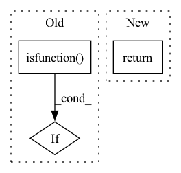

Pattern ID :25253
Before Change
return activation_fn()
elif getattr(fn_name, "__module__", None) == "trident.layers.tensorflow_activations":
if inspect.isfunction( fn_name) :
return fn_name
elif isinstance(fn_name, Layer):
return fn_name()After Change
elif inspect.isfunction(fn_name) or callable(fn_name):
result = inspect.getfullargspec(fn_name)
if 1 == len(result.args):
return fn_name
else:
raise ValueError("Unknown pooling function/ class")
In pattern: SUPERPATTERN
Frequency: 3
Non-data size: 3
Instances Fragment ID: 77166202
Project Name: allanyiin/trident
Commit Name: be0b3b73fa0bb531bd579b5341b36492ceb6a56e
Time: 2020-07-12
Author: allan@asiaminer.com.tw
File Name: trident/layers/tensorflow_activations.py
M Class Name: AnonimousClass
N Class Name: AnonimousClass
M Method Name: get_activation(1)
N Method Name: get_activation(1)
M Parent Class:
N Parent Class:
M File Name: trident/layers/tensorflow_activations.py
N File Name: trident/layers/tensorflow_activations.py
M Start Line: 524
M End Line: 555
N Start Line: 568
N End Line: 590
Before Change
def deprecated(obj):
if inspect.ismethod(obj):
name = "Method %s.%s" % (obj.__class__.__name__, obj.__name__)
elif inspect.isfunction( obj) :
name = "Function %s" % (obj.__name__)
elif inspect.isclass(obj):
name = "Class %s" % (obj.__name__)After Change
import datetime
def deprecated(date_str):
return lambda obj: _deprecated(obj, date_str)
def _deprecated(obj, date_str):
if inspect.isfunction(obj): Fragment ID: 77166186
Project Name: xitorch/xitorch
Commit Name: 88fc65b3b6f53a6170ef3d90a64d89bd8b714d17
Time: 2020-10-06
Author: firman.kasim@gmail.com
File Name: xitorch/_utils/decorators.py
M Class Name: AnonimousClass
N Class Name: AnonimousClass
M Method Name: deprecated(1)
N Method Name: deprecated(1)
M Parent Class:
N Parent Class:
M File Name: xitorch/_utils/decorators.py
N File Name: xitorch/_utils/decorators.py
M Start Line: 5
M End Line: 25
N Start Line: 6
N End Line: 7
Before Change
self.similar(iterator, tokens, x, similar)
// Check if token is a function
elif self.isfunction( tokens, x) :
// Resolve function expression
self.function(iterator, tokens, token)
After Change
if aliases and Token.normalize(token) in aliases:
return token
return self.resolver(token)
Fragment ID: 77166207
Project Name: neuml/txtai
Commit Name: 5ff161f31f9d3031be5409f136e0a10cfb8be892
Time: 2021-12-26
Author: 561939+davidmezzetti@users.noreply.github.com
File Name: src/python/txtai/database/sql/expression.py
M Class Name: Expression
N Class Name: Expression
M Method Name: resolve(3)
N Method Name: resolve(4)
M Parent Class:
N Parent Class:
M File Name: src/python/txtai/database/sql/expression.py
N File Name: src/python/txtai/database/sql/expression.py
M Start Line: 55
M End Line: 91
N Start Line: 377
N End Line: 380